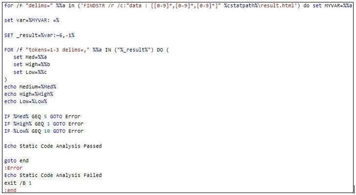
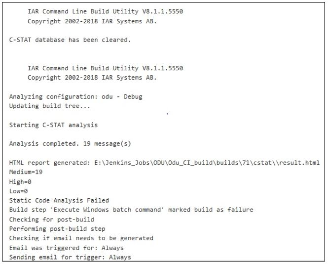

Jenkins CI 自动构建与 C-STAT 代码分析的集成
介绍
我们大多数人都知道，为嵌入式软件设置 CI/CD 总是有局限性或挑战性的，并且我们还看到在某些情况下仍然没有其他可用的选择，这会导致工作量加大和代码质量缺失。
在本文中，我们将看到一个这样的嵌入式开发工具（IAR 嵌入式工作台），以及如何将 C-STAT 静态代码分析与持续集成版本 Jenkins 集成在一起，以及如何通过自动构建。
先决条件：
a. IAR 嵌入式工作台 IDE b. C-STAT 许可证 c. Jenkins 安装
IAR 嵌入式工作台工具为我们提供了命令行执行选项，以实现 IAR 项目的静态代码分析。现在，我们将了解其工作原理。
IAR 命令行应用程序
IAR 系统为我们提供了一个名为 IarBuild.exe 的应用程序，该应用程序用于在命令行中执行分析。您可以在安装路径中找到 IarBuild.exe 应用程序，如下所示。
C:\Program Files (x86) \IAR Systems\Embedded Workbench 8.1\common\bin\
运行代码分析：
首先切换到命令路径中的上述路径，然后执行以下命令来分析整个项目。
IarBuild.exe D:\sample\project\setup\sample.ewp -cstat_analyze Debug
- D:\sample\project\setup\sample.ewp 是您的 IAR 项目文件路径
-cstat_analyze是要执行分析的命令- 设置项目模式为
Debug
通过执行上述命令，它将对整个项目执行静态代码分析，并且结果将存储在 cproject.db 文件中，位于路径 ...project\setup\Debug\Obj\ 下。
注意下次运行代码分析时，如果自上次分析以来对源代码文件进行了任何更改，则必须首先清除数据库，以避免由于数据库文件中的新旧数据混合而引起的问题。
清晰的分析结果
要使用命令行清除数据库文件，请执行以下命令，
IarBuild.exe D:\sample\project\setup\sample.ewp -cstat_clean Debug
生成报告
要生成报告，我们可以使用 IAR 提供的 IREPORT 工具，您可以在同一安装目录中找到该工具。IREPORT 工具用于生成 C-STAT 执行的先前代码分析的 HTML 报告。
该报告以数字和表格形式展示统计数据。可以生成两种不同类型的报告：
- 具有相关信息的大纲，例如有关在项目范围内启用的检查、消息总数、已取消的检查（如果有）、每个检查的消息等信息。
- 完整的报告，其中包含诸如轮廓之类的常量信息，以及在报告结束时有关所有已抑制和未抑制消息的其他信息。表格可以折叠和展开，列可以排序
要生成完整的 HTML 报告，我们可以执行以下命令，
ireport.exe --db D:\sample\project\setup\Debug\Obj\cstat.db --project D:\sample\project \setup\sample.ewp --full --output D:\sample\result.html
上面的命令包含四个参数：
--db 指定报告所基于的数据库文件的路径。
--project 指定项目文件。
--full 生成完整报告，其中包含有关禁止检查和非禁止检查的信息。
--output 指定输出结果文件的名称。
将 C-STAT 与 Jenkins CI 构建集成：
没有直接的插件或方法可用于将此 CSTAT 集成到任何 CI 工具。但是我们可以通过以下方法实现自定义集成。
现在我们知道了用于分析、清理、生成报告文件的命令。使用这些命令，我们可以轻松地编写批处理脚本文件 （.bat） 文件，然后在 Jenkins 中调用此批处理文件，作为预构建命令执行步骤。
设置阈值网关
我们将遇到需要通过设置“低”、“中”、和“高”问题的阈值在 CI 构建中定义网关的场景。如果该值大于设定值，则可以使构建失败。
默认情况下，C-STAT 不向我们提供设置此值的选项。但是我们可以使用以下自定义脚本来实现此目的。
我们可以获得包含低、中、高问题计数分析结果的 HTML 报告。这些值以格式 data: [0-9, 0-9 ,0-9] 在 HTML 结果文件中展现。
请参阅下面的脚本，了解我是如何在一个变量中获取这些值，然后用 sea t 阈值进行验证。

Jenkins 构建结果
下面是 Jenkins CI 构建日志，供您参考。您可以看到由于标识为“中优先级”的 19 个问题而导致构建失败。

结论
经过上面的分析，我们已经了解了如何使用 Jenkins CI 构建自动化 C-STAT 分析，以及如何设置阈值网关来确定构建状态。我希望此博客对那些使用 IAR 嵌入式工作台并希望使用您的 CI 构建系统自动执行 C-STAT 的人有所帮助。